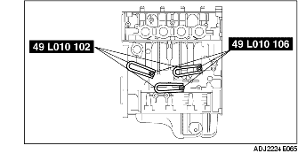
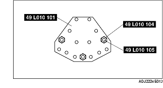
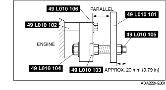

Engine mounting/dismounting
MOUNTING
1. Install the SSTs (arms) to the specified position as shown, and hand-tighten the SST bolts.

2. Assemble the SSTs (bolts, nuts, and plate) to the specified position as shown.

3. Assemble the SSTs (arms and bolts) in Step 1 to the SSTs (bolts, nuts, and plate) in Step 2.
4. Adjust the bolts so that approx. 20 mm {0.79 in} of thread is exposed from the side of the plate.

5. Adjust the bolts and nuts so that the plate and arms are parallel.
6. Mount the engine on the SST.
- • The self-locking brake system of the engine stand may not be effective when the engine is held in an unbalanced position. This could lead to sudden, rapid movement of the engine and the mounting stand handle causing serious injury. Never keep the engine in an unbalanced position, and always hold the rotating handle firmly when turning the engine.
7. Remove the oil drain plug and drain the engine oil.
8. Install the drain plug and a new washer.
DISMOUNTING
1. Dismount in the reverse order of mounting.